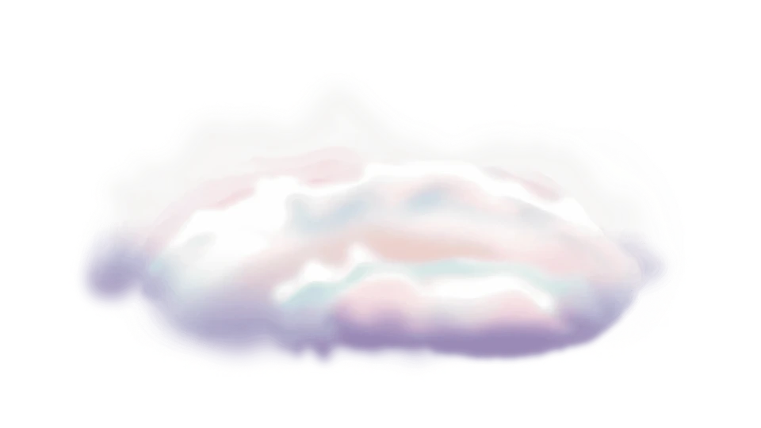

From your artwork to the web
No frame. No background.
Just your animation.
Lifetime license, one payment.


Add your artwork
Drop in an animation or a folder of PNG frames, transparency intact. Animated .webp welcome.
Find the right fit
Preview different sizes and backgrounds. Adjust quality and compare the estimated file size before you commit.
Create and place
One component, every size inside it. Place it in your scene and you’re done moving things around.

The right file for every device
Glimmerglass dynamically surfaces the file each device plays best. Phones get the light one, desktops get the pretty one, nobody waits.
Transparency, everywhere
Real alpha in every browser. No checkerboards, no hacks, no green screen cosplay.
One component, not twelve
The Framer plugin gives you a highly adjustable component. Every responsive size lives inside it, so you move one thing around your scene, not a stack of them.
Proof it’s the original.
Every file will carry a sealed receipt. Change a single byte and the seal breaks - and anyone can check. No names, no personal details, just proof the work is the work.
Built for AI output
Your AI tools keep handing you animated .webp files. Glimmerglass turns them into proper transparent video, light enough for the real web.
Lifetime license, one payment
One license per person, yours for good. Buy your key on Gumroad. It arrives by email.
Need a hand?
Tell us your device, input format and the error you see. Keep license keys and private artwork out of your first message.
mike@houseofkoco.com